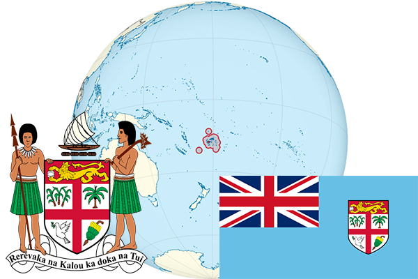

To`liq nomi: Fiji Respublikasi
Region: Okeaniya
Qonunchilik shakli: Respublika
Mustaqillik kuni : 10-oktabr 1970 yil (Birlashgan Qirollikdan)
Poytaxt: Suva
Maydoni: 18 274 km² (dunyoda 151 -o`rinda )
Chegaradosh davlatlari: yo`q
Aholisi: 849 000 (dunyoda 156 - o`rinda, 2009 -yil roʻyxat)
Aholi zichligi: 46,4 /km²
Aholining o`rtacha yoshi: 70,2 yil ( 72,8 ayollar, 67,6 erkaklar)
Rasmiy tili: Ingliz, fiji tili
Dini: Islom,xristian, induizm
Pul birligi: fiji dollari
Telefon prefiksi: +679
Internet domen: .fj
Xalqaro tashkilotlarga a`zoligi: BMT (1970 – yildan)
Dengiz va okeanlarga chiqishi: Tinch okeani, Fiji dengizi
YIM: Butun: $ 3,678 mlrd , Jon boshiga: $ 4196 (2008 - yil roʻyxati)
Yirik shaharlari: Suva